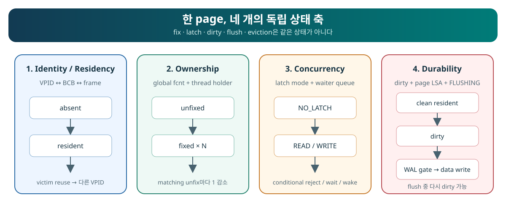

“Page” names several distinct objects

Solid relationships belong to the resident structure; dashed relationships are temporary borrowing or debt.
| Object | What it is | Lifetime that matters |
|---|---|---|
VPID | A (volid, pageid) identity value. | May exist without residency; allocation validity belongs outside the page buffer. |
| BCB | A reusable pool control block holding the current identity and control state. | Lives with the pool; may represent different VPIDs over time. |
| Frame | The page-sized bytes paired one-to-one with a BCB. | Lives with the pool; contents belong to the current resident-identity generation. |
PAGE_PTR | A caller-visible address into the current frame. | A borrowed view whose use ends at matching unfix. |
Global fcnt | The BCB-wide count of granted fixes across threads. | Positive debt prevents ordinary frame reuse. |
| Thread holder | A per-thread BCB reference plus nested fix_count. | Remains until that thread repays its final nested debt. |
Verified mechanism: holder, atomic-latch fcnt, BCB, and paired frame definitions are in pinned page_buffer.c:460–555; one-to-one table pairing is in 5559–5660.
The same address can outlive the meaning you gave it
Pool lifetime
BCB and frame storage exist from page-buffer initialization to finalization.
Resident generation
The BCB/frame represents one current VPID until invalidation or safe reuse changes that identity.
Borrow lifetime
One successful fix grants one debt-backed use of PAGE_PTR until its matching unfix.
The trap
A stable pointer address does not prove stable identity or continuing ownership after release.
Pointer equality is not page identity, and storage lifetime is not permission lifetime.
Ask four independent questions

The example positions are coordinates, not one mandatory sequence.
| Axis | Question | It cannot answer |
|---|---|---|
| Identity / residency | Which VPID, if any, does this BCB/frame represent? | Whether a thread owns it or whether its bytes are recoverable. |
| Ownership | Which granted fixes currently prevent ordinary reuse? | Which latch mode protects content or whether it is dirty. |
| Concurrency | Who may inspect or mutate the bytes now? | Transaction visibility, ownership lifetime, or durability. |
| Durability / propagation | Which generation needs propagation, and what recovery boundary exists? | Whether the page is resident, fixed, or safe to reuse. |
A valid state that exposes two bad shortcuts
Suppose a BCB still represents VPID (8, 41), global fcnt == 0, its latch mode is NO_LATCH, and its resident generation is DIRTY.
| Coordinate | Classification |
|---|---|
| Identity / residency | Resident as VPID (8, 41). |
| Ownership | No outstanding fix debt. |
| Concurrency | No granted content latch at this snapshot. |
| Durability / propagation | DIRTY: this resident generation still needs page-image propagation. |
fcnt == 0 does not mean “evicted,” because the VPID is still resident. It also does not mean “eligible victim,” because ordinary reuse still requires the dirty/flush, waiter, replacement-zone, and protected revalidation checks.You can now see why “page state” is too vague. The useful description is the four-coordinate tuple.
The guarantees and limits of a successful lookup
A successful normal READ fix establishes a resident identity mapping, positive fix debt that includes this acquisition, a granted READ page latch, and a borrowed pointer lifetime. Success alone does not establish clean versus dirty, durable versus not durable, record existence, correct transaction locking, or caller correctness.
fcnt positive; and durability state does not change merely because ownership was released.Interface contract and Verified mechanism: the normal successful-fix postcondition and matching release are routed through the canonical Core explanation, with pinned paths at page_buffer.c:2260–2685, 6277–6634, and 3062–3201.
Draw, classify, and teach back
Prompt
Draw the six-object map from memory. Then classify “resident, fcnt == 0, NO_LATCH, DIRTY” and explain why it is neither evicted nor an ordinary eligible victim.
Model / recommended structure: identity value → reusable control block ↔ reusable bytes → borrowed view; global and per-thread debt; four coordinates; counterexample.
Your task: include where each lifetime ends and distinguish an Interface contract from a Verified mechanism.
Paste the answer into the chat. I will check ownership, lifetime, state-axis separation, and evidence language before recording any mastery.
Start by reading the structures
Read pinned page_buffer.c:460–555. Locate exactly five stored facts: holder debt, global fcnt, current BCB VPID, frame linkage, and dirty/LSA state. Stop before tracing acquisition control flow.
Open the printable object-and-state card →